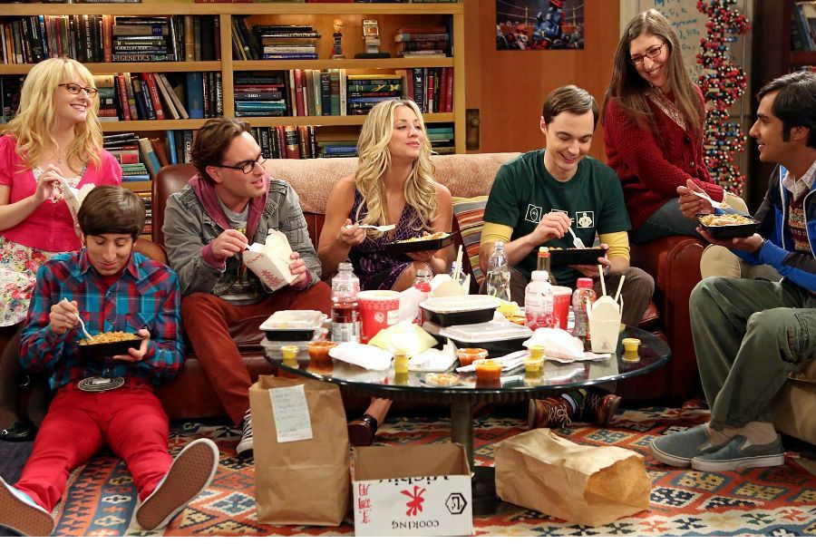

The Big Bang Theory é uma série de televisão norte-americana de comédia de situação que estreou na CBS em 24 de setembro de 2007 e terminou em 16 de maio de 2019, totalizando 279 episódios e doze temporadas. Criada por Chuck Lorre e Bill Prady, a série conta com cinco personagens que vivem em Pasadena, entre eles o físico teórico Sheldon Cooper e o físico experimental Leonard Hofstadter, ambos vivendo juntos, partilhando um apartamento e trabalhando no Instituto de Tecnologia da Califórnia - Caltech; Penny, uma garçonete e aspirante a atriz que mais tarde se torna uma representante farmacêutica, e que vive como vizinha de ambos; e o engenheiro aeroespacial Howard Wolowitz e o astrofísico Rajesh Koothrappali, amigos e colegas de trabalho geeks, semelhantes e socialmente desajeitados de Leonard e Sheldon. Os hábitos geeks e o intelecto dos quatro rapazes entra em contraste em relação ao efeito cômico com habilidades sociais e senso comum de Penny.
